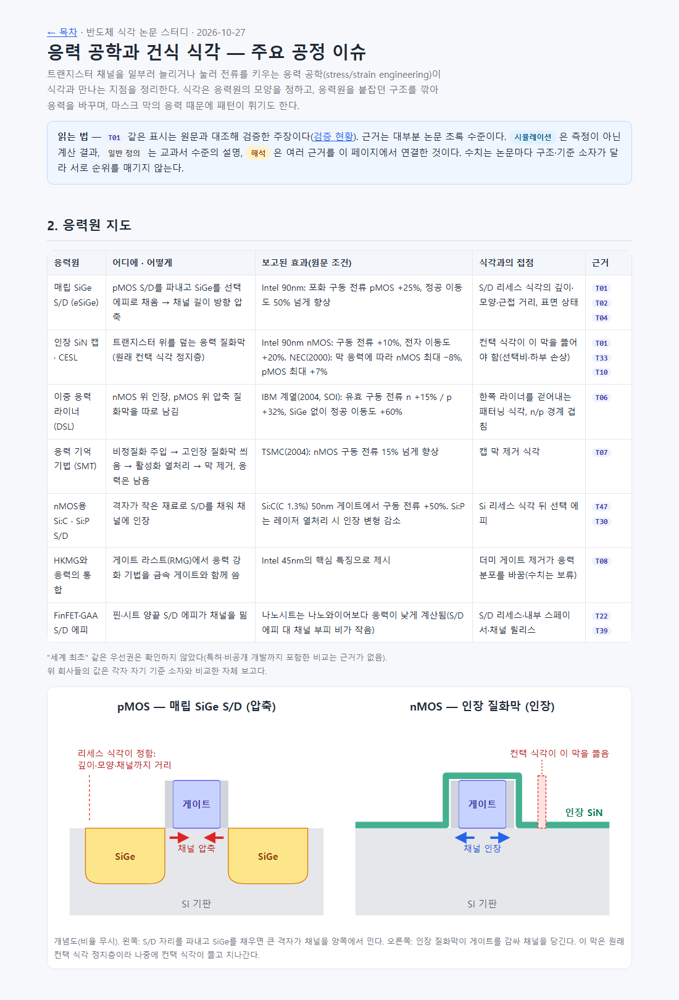
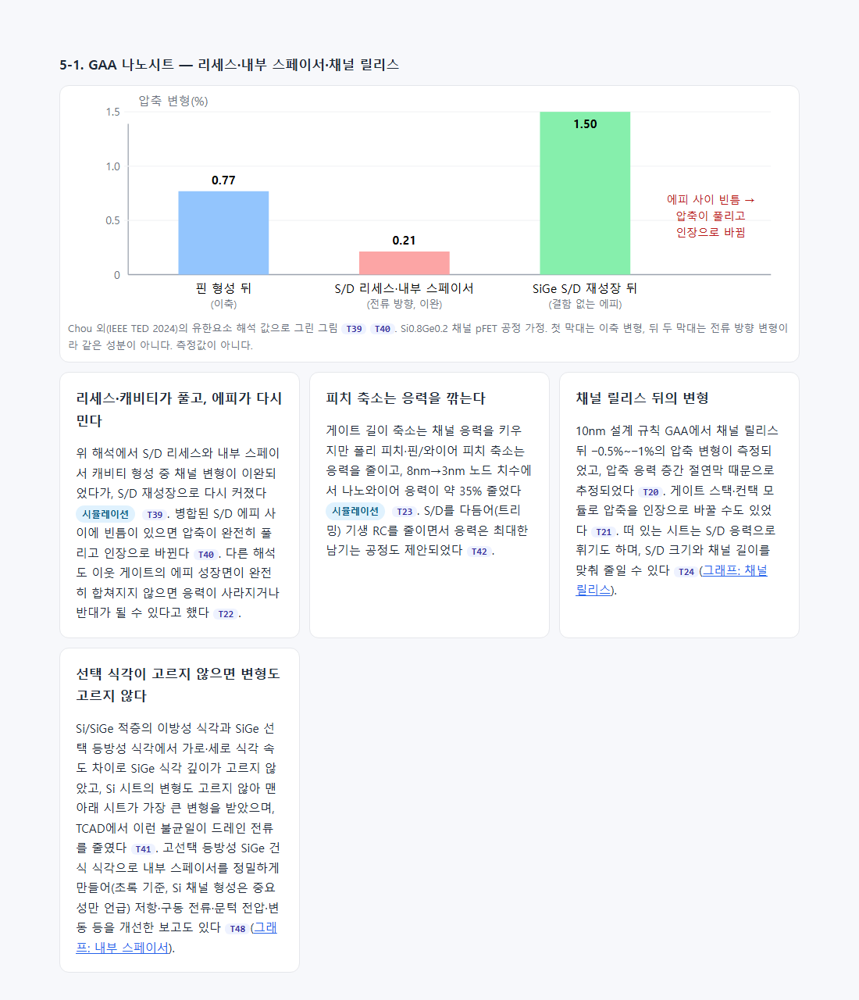
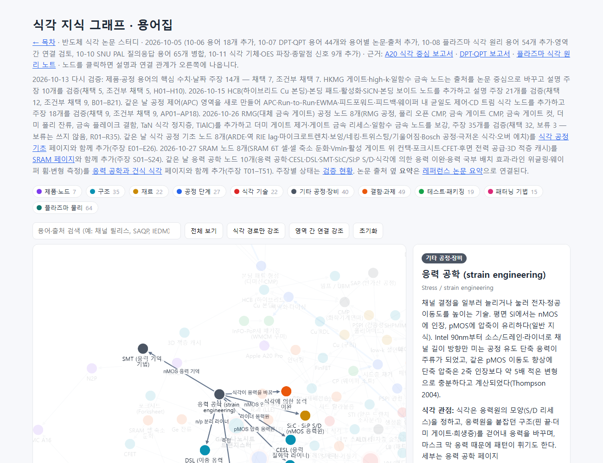

#64
응력 공학 × 건식 식각 — 주요 공정 이슈 조사·페이지·그래프 노드
지시 (원문)
Stress Engineering과 Dry etching 관점에서 주요한 공정 이슈 조사
분석 (Claude의 정리)
- 응력 공학(채널을 일부러 늘리거나 눌러 이동도를 높이는 기술)이 건식 식각과 만나는 공정 이슈를 조사한다.
- 세 갈래로 나눴다.
- ① 응력원을 만드는 식각: S/D 리세스, DSL 패터닝, 응력 라이너를 뚫는 컨택 식각.
- ② 식각이 응력을 바꾸는 경우: 핀 컷·STI·게이트 컷, GAA 리세스·내부 스페이서·채널 릴리스.
- ③ 막 응력이 패턴을 망가뜨리는 경우: 라인 위글링, 웨이퍼 휨.
- 그래프에는 eSiGe·S/D 리세스·패턴 붕괴 노드만 있고 응력 공학 자체는 없었다. 지금까지처럼 검증 → 학습 페이지 + 그래프 노드로 넣는다.
과정
- 자문.
- astra(high, 백그라운드): 응력원의 역사(단축·2축, CESL, eSiGe, DSL, SMT, Si:C/Si:P, RMG, FinFET·GAA), 식각 이슈(리세스 모양·로딩·잔사, DSL 제거 식각·경계, CESL 컨택 식각, 핀 컷·STI 이완, 나노시트 리세스·릴리스, 하드마스크 위글링·웨이퍼 휨, 플라즈마 손상), 변형 측정, 정량값을 1차 출처와 함께 물었다. 확인하지 못한 일반화는 따로 표시하게 했다.
- jev
- 형태: "별도 학습 페이지 + 그래프 노드"(0.96, 신뢰도 0.94).
- 가장 깊게 다룰 부분: "응력원을 만드는 식각"(0.62, 신뢰도 0.49), "세 갈래 고르게"가 0.25. 페이지는 ①을 가장 길게 쓰고 ②·③도 함께 다뤘다.
- 기록 단계: "18단계(SRAM 리서치)에 이어 붙임"(0.64, 신뢰도 0.28). 따르지 않았다. 응력 공학은 SRAM과 주제가 다르고, 리서치 주제마다 단계를 따로 만들어 왔기 때문이다(#60~#62와 같은 기준). 새 19단계를 만들었다.
- OpenAlex로 1차 출처 초록을 모았다. Intel 90nm(Thompson·Ghani), DSL(Yang 2004), SMT(Chen 2004), CESL 응력 전달, S/D 리세스 모양·근접 거리, 핀 컷 LLE, 나노시트 변형, TiN·탄소 하드마스크 위글링, 3D NAND 웨이퍼 휨, 변형 측정 논문이다.
- 장부
ledger/stress.json(비공개)에 1차 주장 32개(T01–T32)를 적었다. lint 오류 0, DOI 27개 실재·제목 일치. 검증자 5개에 blind 입력만 넘겼다. 결과는 지지 30, 부분 지지 2였다.- T02: 정공·전자 이동도 수치가 서로 다른 응력원(SiGe S/D, 인장 SiN 캡)에서 나왔다는 점이 흐려져 있었다. 나눠 적었다.
- T25: PVD TiN의 +0.1 GPa 고유 응력 값이 초록에 없다는 판정이었다. 값을 빼고 EUV 28nm 피치 조건을 넣었다.
- astra 결과를 받았다. 출처의 학회·연도를 바로잡은 점이 유용했다. Intel 90nm 발표는 IEDM 2002 → IEDM 2003 → TED 2004로 나뉘고, SMT는 IEDM이 아니라 VLSI 2004다. 일반화할 수 없는 주장도 따로 표시되어 있었다. 예: "GAA S/D 응력은 FinFET보다 항상 약하다", "재료 제거는 항상 응력을 줄인다", 보편적 CESL 최대 두께·NiSi 손상 임계 에너지. 이 결과에서 초록으로 확인할 수 있는 출처를 골라 주장 19개(T33–T51)를 더했다.
- 더한 주제: CESL 응력의 초기 보고(NEC 2000), DSL 경계 겹침과 수율, 핀 길이별 탄성 이완, STI·확산 단절·게이트 컷 LLE, 나노시트 공정 단계별 변형(FEA), 선택 식각 깊이 불균일과 시트 변형, HBr에 의한 ACL 위글링, 웨이퍼 휨과 CD 균일도, FIB 시편 이완, Si:C S/D, 컨택 SiN 라이너 고선택 식각(AVS 2010 학회 초록).
- 더미 게이트 제거 뒤 응력 증가 수치(Auth 2008 본문 그림)와 시그마 리세스 공정 세부(Qin 2017 본문)는 작성자도 2차 요약으로만 보았다. 그 사실을 근거 위치에 그대로 적었다.
- 2차 검증(검증자 4개, 새 주장 19개와 수정 2개).
- T49(더미 게이트 제거 응력 수치)와 T50(시그마 리세스 세부)은 본문을 열 수 없어 '확인 불가'로 보류되었다. 페이지에는 수치 없이 "검증 보류"로만 적었다.
- T34(DSL 스퍼터링 수율)는 초록에 없는 "무결함 수율" 표현을 지적받았다. T39(나노시트 FEA)는 조성·결함 없는 조건을 확인하지 못했다는 판정이었다. 둘 다 고쳐 재검증했고, 모두 지지를 받았다.
- T48(Durfee 2021)은 "정밀하게 만든" 대상이 초록에서는 내부 스페이서뿐이라는 조건부 판정이었다. 페이지 문장에 그 조건을 넣었다.
- 최종 gate: 주장 51개 — 채택 48, 조건부 1, 보류 2.
- 새 페이지
research/stress_etch.html를 썼다.- 구성: 응력 공학 기초(단축·2축), 응력원 지도 표, 세 갈래 개요, ① 응력원을 만드는 식각, ② 식각이 응력을 바꾸는 경우(GAA 단계별 변형 막대그림 포함), ③ 막 응력과 패턴, 변형 측정법, 식각 엔지니어 점검표.
- 그림 2개: pMOS eSiGe·nMOS 인장 질화막 단면 개념도, 나노시트 공정 단계별 변형 막대그림(FEA 값, 측정값 아님을 명시).
- 표시: 시뮬레이션·일반 정의·해석을 구분하는 표시를 달았다. astra가 찾았지만 장부로 검증하지 않은 내용(리세스 로딩·잔사·C/F 오염, DSL 제거 식각의 실리사이드 손상 특허)은 "검증하지 않았다"고 밝혔다.
- 그래프에 노드 10개를 추가했다. 응력 공학, CESL, DSL, SMT, Si:C·Si:P S/D, 식각에 의한 응력 이완, 응력 국부 배치 효과(LLE), 라인 위글링, 웨이퍼 휨, 변형 측정이다. 기존 eSiGe·S/D 리세스·STI·채널 릴리스·내부 스페이서·더미 게이트 제거·금속 게이트 컷·하드마스크·패턴 붕괴·오버레이 노드와 관계 24개로 이었다. eSiGe·S/D 리세스 노드 설명도 보강했다.
- 인용 논문 42편의 요약을 썼다(1편은 기존 요약 재사용). 검증자 5개의 1차 결과는 채택 34, 부분 지지 8이었다.
- 지적은 모두 빠진 조건이었다. 예: Ghani 2003은 "대량 생산 램프 중", Denneulin은 "실리사이드 전 기준", Reboh 2019는 "10nm 설계 규칙", Chou 2024는 "결함 없는 에피"라는 조건이 빠져 있었다.
- Rossoni 2025는 한 검증자가 "초록에 게이트 컷이 없다"고 했다. 그러나 초록 본문에 Gate Cuts가 있다. 판정은 그대로 기록하고, 위치를 "초록 5~7번째 문장"으로 구체화해 다시 넘겼다.
- 8개를 고쳐 재검증한 결과 모두 지지를 받았다. 최종: 42편 모두 채택.
- 연결과 build.
- 목차 공정 리서치 섹션, 학습 경로 4단계(GAA), 주제 바로가기에 연결했다(소자에 "응력 공학", 패터닝에 "라인 위글링").
- 검증 현황에 "응력 공학" 묶음을 만들고, 그래프 안내 문구와 목차 숫자를 갱신했다.
- 첫 build에서 논문 요약 생성기가 DOI 없는 학회 초록(AVS 2010)의
url을 찾지 못해 멈췄다. 항목에url을 넣어 해결했다. - 결과: 그래프 노드 300개·관계 648개, 논문 요약 227편(채택 218·조건부 9), 검증 현황 492개(채택 416·조건부 64·보류 12).
--check, 링크(39쪽 0건), 요약 연결, OES 그래프 검사 모두 통과.
- 스크린샷. 첫 캡처에서 그림 글자가 겹친 곳 3군데를 고쳤다(리세스 설명과 게이트, 축 이름과 눈금, 인장 SiN 라벨). 그 뒤 다시 찍었다. 캡처용 사본은 지웠다.
결과 / 증거
성공 응력 공학 × 건식 식각 학습 페이지와 그래프 노드 10개를 추가했다.
- ① 응력원을 만드는 식각
- eSiGe 리세스는 깊이보다 모양·채널까지 거리·결정면 구성이 응력을 정한다. 여러 결정면 캐비티에서 응력이 90–220 MPa로 흩어졌다.
- DSL 경계가 가까우면 이동도가 떨어지고, 경계 윗면을 다듬자 수율이 늘었다(IBM 보고).
- 게이트 라스트에서는 인장 라이너가 DHF에 깎인다.
- CESL을 뚫는 컨택 식각의 선택비가 기판 손상을 좌우한다.
- ② 식각이 응력을 바꾸는 경우
- 핀 컷이 SiGe 핀 변형을 풀어 배치 효과(LLE)를 만든다.
- STI·확산 단절·게이트 컷도 응력을 바꾼다.
- 나노시트는 리세스·내부 스페이서 단계에서 이완되었다가 S/D 에피로 다시 압축된다(FEA). 에피 사이 빈틈은 응력을 뒤집는다.
- 선택 식각 깊이가 고르지 않으면 시트별 변형도 고르지 않다.
- ③ 막 응력과 패턴: 플라즈마 노출이 TiN 하드마스크 압축 응력을 키워 위글링을 일으킨다. HBr은 탄소 마스크 표면을 수소화해 위글링을 늘린다. 3D NAND 웨이퍼 휨은 오버레이와 CD 균일도를 흔든다.
- 남은 한계
- 근거는 대부분 초록 수준이다.
- 더미 게이트 제거 시 응력 증가 수치와 시그마 리세스 공정 세부는 보류했다.
- 리세스 로딩·잔사·오염, DSL 제거 식각의 실리사이드 손상은 장부로 검증하지 않았다.
응력 공학 페이지 열기 → · 그래프 응력 공학 노드 → · 검증 현황(T01–T51)
도입부와 응력원 지도(표·단면 개념도), 캡처용 사본에서 해당 부분만 표시:

GAA 나노시트 공정 단계별 변형 막대그림과 리세스·릴리스·선택 식각 카드:

그래프의 응력 공학 노드와 연결:
